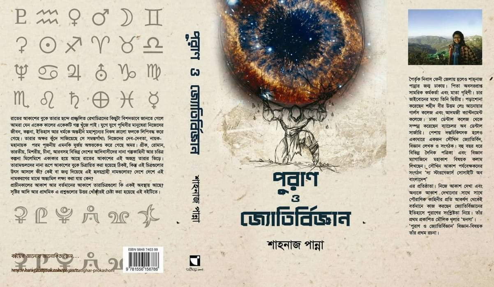

পুরাণ ও জ্যোতির্বিজ্ঞান
শাহানাজ পান্না বইটির নাম দেখেই হয়তো বুঝে ফেলেছেন বইটি কোন বিষয়ের। আমার মতো যারা সৌখিন জ্যোতির্বিদ তারা জানেন আকাশের তারা মন্ডলের সাথে পৌরাণিক গল্পের মিল রয়েছে। বিভিন্ন সভ্যতার জন্য যেমন তাদের তারামন্ডল আলাদা হয় তেমনই তাদের গল্প গুলোও আলাদা হয়। বিভিন্ন সমৃদ্ধ সভ্যতার গল্পের মাঝে হিন্দু, গ্রিক এবং নর্স পূরাণের গল্প বিখ্যাত। উক্ত বইটিতে শুধু হিন্দু পূরাণ এবং গ্রিক পূরাণ নিয়ে আলোচনা করা হয়েছে।
বইটার কিছুদিক আমার ভালো লাগে নি। তিনি হিন্দু পুরাণের কিছু ভুল তথ্য সেখানে দিয়েছেন এবং কিছু তথ্য বিতর্কিত ছিলো। হিন্দু পুরাণ সম্পর্কে কিছুটা ধারণা আছে বিধায় বুঝতে পেরেছি। লেখিকা সম্ববত তথ্য যাচাইয়ে অতটা মনোযোগী ছিলেন না। গ্রিক পুরাণ সম্পর্কে প্রথম জানলাম তাই বলতে পারি না সেখানে কোন ভুল বা বিতর্কিত তথ্য দেওয়া আছে কিনা।
১২ মাসের তারা মানচিত্র দেওয়া আছে তবে নিশ্চিন্তে থাকুন আপনি যদি নতুন নতুন মন্ডল চেনা শুরু করেন তবে এই তারা মানচিত্র আপনার কোন কাজের না। এখানে কিন্তু তারা মন্ডল সম্পর্কে বিস্তারিত বলা নেই, শুধু গল্পের মাঝেই সীমাবদ্ধ রেখেছেন। এটা আমার ভালো লেগেছে। গল্পের চরিত্র মাঝে মাঝেই গুলিয়ে ফেলেছি, লেখিকা চাইলে আরেকটু সাজিয়ে লিখতে পারতেন। লেখা অনেকটাই Wikipedia টাইপের।
রেটিং: ৫/১০।
সম্ভাব্য প্রাপ্তি স্থানের একটি Rokomari.